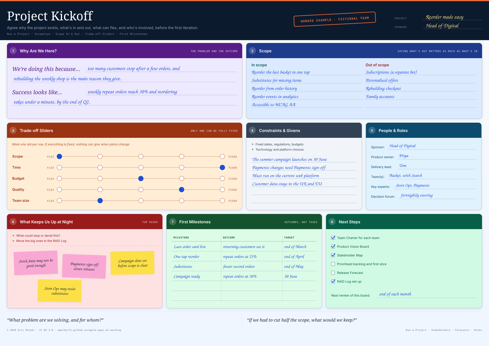
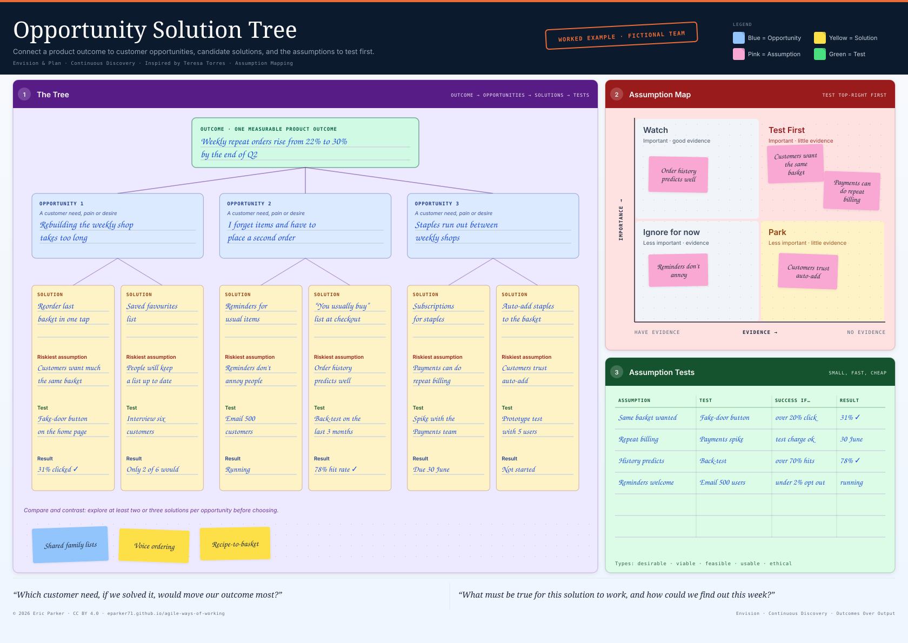
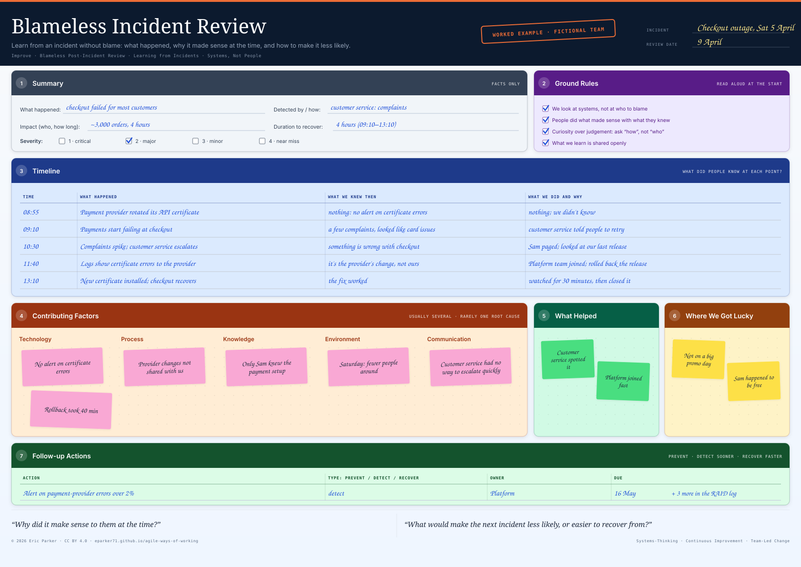
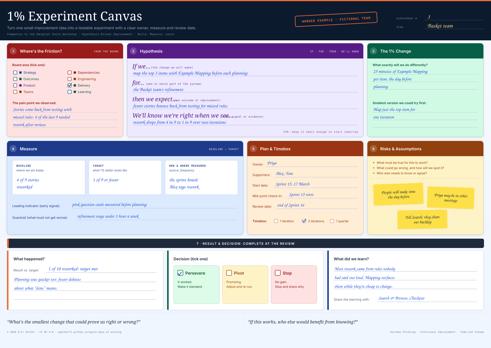
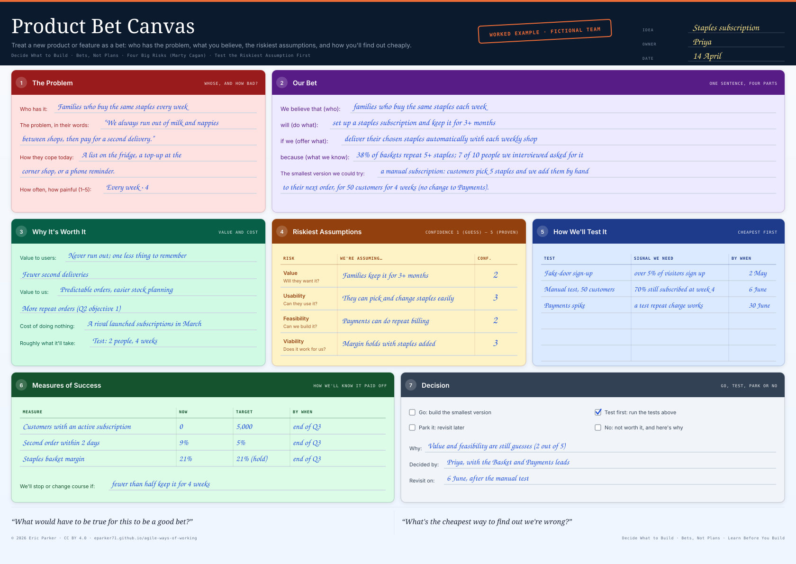
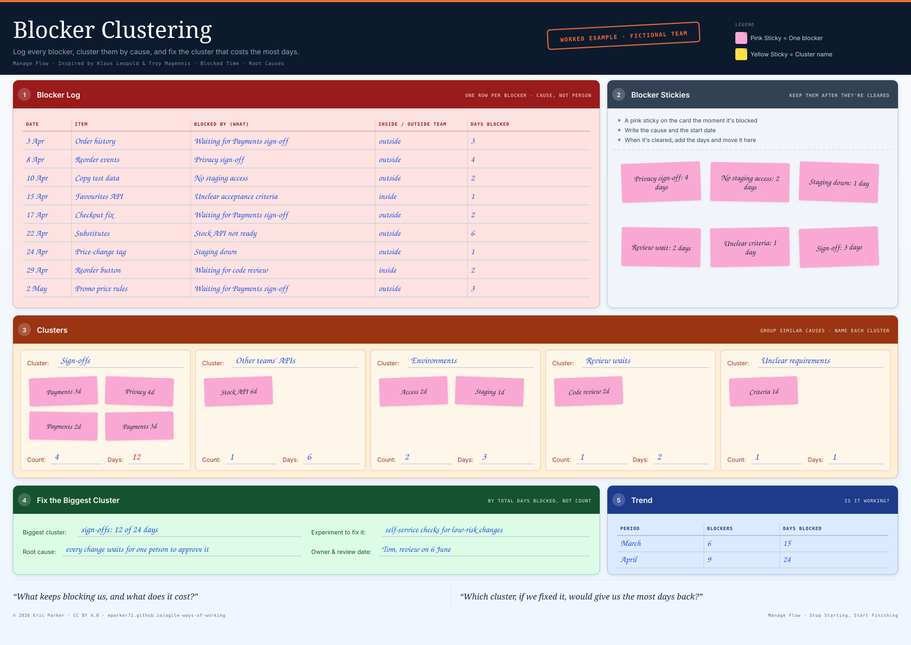
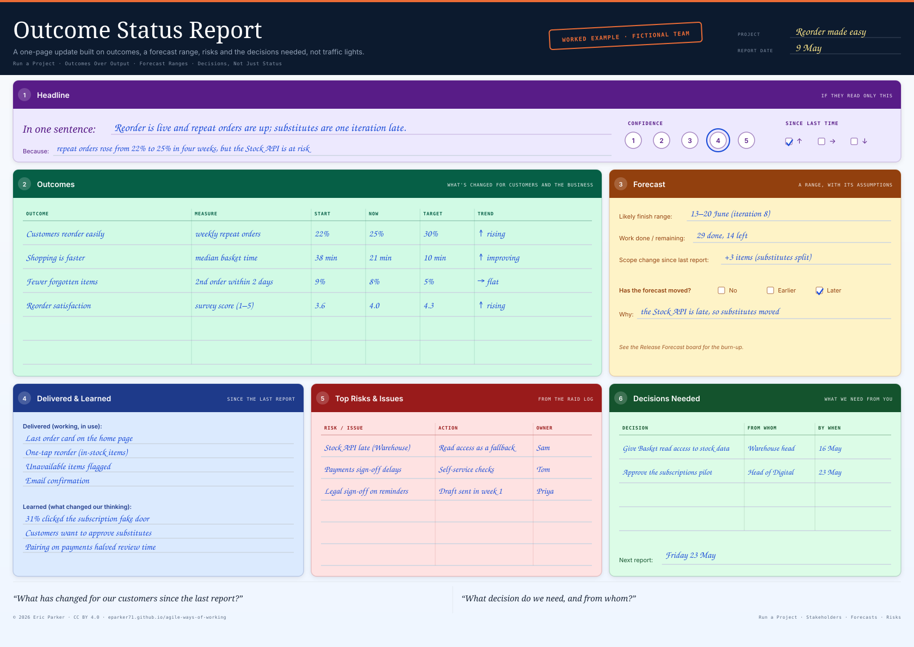

The cast. The Basket team: Priya (product owner), Sam and Jo (developers), Alex (tester), Mei (designer), Tom (Scrum Master), and Ravi (developer, from March). Around them: the Head of Digital (sponsor), and the Checkout, Payments, Search & Browse, Store Platform and Warehouse teams. The goal: make the weekly shop effortless, so repeat orders rise from 22% to 30%.
February · Getting started
- 3 Feb

Project KickoffThe Head of Digital sponsors “Reorder made easy”: repeat orders from 22% to 30% by the end of June, with only the campaign date fixed.Lesson: Agree what can flex before you start. Here only the date was fixed, so scope could give. - 12 Feb

Opportunity Solution TreeOne outcome, three opportunities, six solutions. A fake-door button shows 31% of customers want one-tap reorder.Lesson: Test the riskiest assumption cheaply, before building anything.
March · Forming the team
- 3 Mar
 Team CharterThe Basket team agrees its purpose, values, working agreements and Definitions of Ready and Done.Lesson: Working agreements written on day one save arguments in month three.
Team CharterThe Basket team agrees its purpose, values, working agreements and Definitions of Ready and Done.Lesson: Working agreements written on day one save arguments in month three. - 14 Mar
 Start · Stop · ContinueSprint 14's retro: stop starting new work while items are blocked; try Example Mapping before planning.Lesson: A retro is only as good as its actions: each one has an owner and a “done when”.
Start · Stop · ContinueSprint 14's retro: stop starting new work while items are blocked; try Example Mapping before planning.Lesson: A retro is only as good as its actions: each one has an owner and a “done when”.
April · Delivering, and the first knocks
- 9 Apr

Blameless Incident ReviewSaturday 5 April: checkout fails for four hours. The blameless review finds no alert on certificate errors.Lesson: Ask why it made sense at the time. Fix the system, not the person. - 11 Apr

1% Experiment CanvasExample Mapping before planning worked: rework fell from 4 in 9 stories to 1 in 10.Lesson: Small, measured experiments turn retro ideas into evidence. - 14 Apr

Product Bet CanvasThe staples subscription bet: test it by hand with 50 customers before building anything.Lesson: Treat big ideas as bets with a stop rule, not as plans.
May · Under pressure
- 5 May

Blocker ClusteringApril's blockers clustered: sign-offs cost 12 of 24 blocked days, so that's the one to fix.Lesson: Count blocked days, not blockers: one cause, sign-offs, cost half of them. - 8 May
 Architecture Decision RecordADR 007: read stock levels from a replica behind an adapter, and switch to the API when it ships.Lesson: Write down why you chose, so the next person doesn't have to argue it again.
Architecture Decision RecordADR 007: read stock levels from a replica behind an adapter, and switch to the API when it ships.Lesson: Write down why you chose, so the next person doesn't have to argue it again. - 9 May

Outcome Status ReportAmber: reorder is live and repeat orders are at 25%, but substitutes are an iteration late.Lesson: Report outcomes and a forecast range, and ask for the decisions you need.
June · Shipping
July · Finishing well
All names, numbers and events are made up, but the problems are real ones. For the tools grouped by job instead of by date, see the worked examples gallery; for situations rather than a story, see the Scenario Playbook.